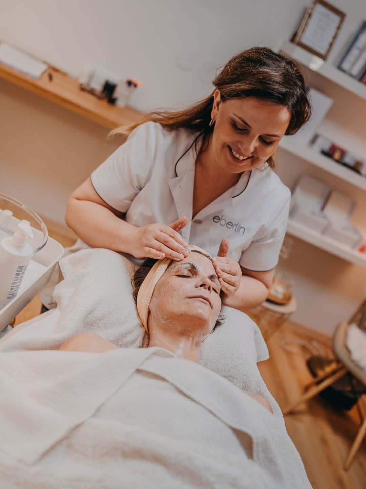
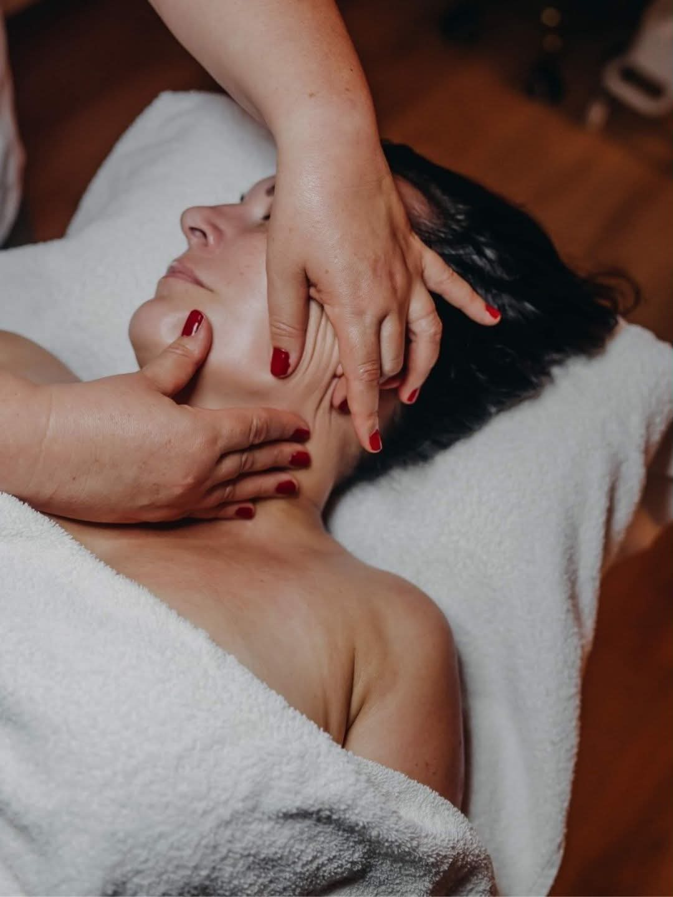
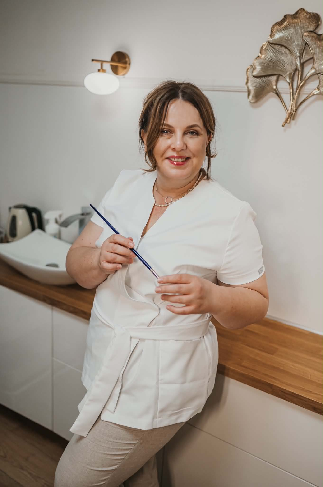

Skin Balance Method
Vaše pleť nepotřebuje další relaxační rituál.
Ani další sérum.
Potřebuje systém a plán.
Proto pracuji s vlastní autorskou metodou — Skin Balance Method.

Pro koho
Kosmetika, která vychází ze skutečných potřeb vaší pleti
Moje péče je určena ženám, které už nechtějí svou pleť řídit metodou pokus–omyl. Místo dalších trendů a zázračných produktů hledají jasný plán, odborné vedení a péči, která respektuje to, co jejich pleť právě potřebuje.
Jste tu správně, pokud…
- výsledky kosmetických ošetření vydrží jen krátce,
- máte pocit, že navzdory veškeré péči se vaše pleť neposouvá,
- už nechcete zkoušet další doporučení z internetu, ale rozumět tomu, co vaší pleti prospívá,
- hledáte kosmetickou péči, která se přizpůsobí vaší pleti, ne naopak.
Každá pleť je jiná. Proto nezačínám výběrem ošetření, ale diagnostikou a hledáním souvislostí. Teprve potom společně vytvoříme plán péče, který bude odpovídat potřebám vaší pleti i vašim očekáváním.
Mým cílem není, abyste odcházela jen s krásnější pletí. Chci, abyste odcházela s jistotou, že víte, proč o svou pleť pečujete právě tímto způsobem.

Proč pracuji jinak
Pleť je živý biologický systém
Pleť není jen povrch, který upravujeme zvenčí. Je to živý biologický systém, jehož vzhled odráží to, co se děje uvnitř.
Pokud je oslabená, podrážděná, dlouhodobě zarudlá nebo má narušenou kožní bariéru, nebude dobře reagovat ani na kvalitní kosmetiku, ani na intenzivní ošetření.
Mnoho žen dnes své pleti dopřává stále více aktivních látek a intenzivních procedur. Často ale chybí to nejdůležitější — vytvořit pleti podmínky, aby mohla regenerovat. Pokud na to není připravená, nemusí naplno využít potenciál ani těch nejkvalitnějších účinných látek a ošetření.
Výsledkem pak bývá jen krátkodobý efekt. Pleť může působit unaveně, citlivě nebo ztrácet svou přirozenou vitalitu.
Proto je základem mé Skin Balance Method nejprve pleť stabilizovat, obnovit její rovnováhu a podpořit její přirozenou schopnost regenerace. Teprve potom přichází na řadu cílená biostimulace.
Autorská metoda
Skin Balance Method
Krásná pleť začíná zdravou pletí. Jen pleť, která správně funguje, se dokáže regenerovat a přirozeně reagovat na stimulaci.
Na tomto principu stojí moje autorská Skin Balance Method, která vychází z fyziologie kůže a principů korneoterapie.
Nejprve obnovujeme rovnováhu pleti a podporujeme její přirozenou schopnost regenerace. Teprve když je na další krok připravená, přichází na řadu cílená biostimulace. Díky tomu na sebe jednotlivé kroky navazují, respektují biologii vaší pleti a vedou k výsledkům, které jsou nejen viditelné, ale především dlouhodobé.
Diagnostika
Nejprve poznáme skutečné potřeby vaší pleti. Jen díky pečlivé diagnostice lze vytvořit péči, která bude dávat smysl.
Stabilizace
Obnovujeme kožní bariéru, zklidňujeme pleť a vytváříme podmínky, ve kterých může znovu správně fungovat a regenerovat.
Regenerace
Podporujeme přirozené regenerační procesy pleti a obnovujeme její schopnost reagovat na aktivní péči. Pleť získává sílu pro další krok.
Cílená biostimulace
Teprve připravená pleť dokáže na stimulaci reagovat naplno. Díky tomu jsou výsledky přirozené, dlouhodobé a odpovídají skutečným potřebám vaší pleti.
Specializuji se na
Co řeším
Akné v dospělosti
Pleť, kterou nelze řešit stejně jako akné teenagerů.
Rosacea a reaktivní pleť
Stavy, kde silné zásahy škodí víc, než pomáhají.
Periorální dermatitida
Často důsledek přetížené péče. Vyžaduje opačný směr — ne víc, ale méně.
Udržitelné stárnutí
Ne boj proti vráskám, ale podpora pleti v procesu, kterým prochází.
Citlivá a oslabená pleť
Obnova bariéry jako základ všeho ostatního.
Stavy, kde je potřeba respekt, citlivost a porozumění pleti.
Krok za krokem
Jak probíhá spolupráce
Diagnostická konzultace
Nezačínáme výběrem procedury, ale porozuměním vaší pleti. Společně se podíváme na její aktuální stav, potřeby i to, co ji může dlouhodobě ovlivňovat.
Návrh péče
Navrhnu péči, která bude odpovídat skutečným potřebám vaší pleti, a vysvětlím vám smysl jednotlivých kroků. Vy se poté v klidu rozhodnete, jakou cestou se vydáme.
Dlouhodobé vedení
Péče o pleť není jednorázová návštěva, ale promyšlený proces. Jednotlivé kroky na sebe navazují a já vás jimi provázím tak, aby se pleť mohla postupně měnit a výsledky měly dlouhodobý charakter.

Kdo jsem
Gabriela Hřibová
Skin specialistka s více než 15 lety praxe. Ve své práci propojuji zkušenosti s nejnovějšími poznatky biocelulární kosmetiky, které získávám vzděláváním u italských a korejských odborníků. Pracuji se značkami Natinuel, DIBI Milano a Thesera. Jsem ambasadorkou a trenérkou DIBI Milano pro Českou republiku.
V roce 2025 jsem získala ocenění Skin Institutu a společnosti Natinuel za přínos oboru a sdílení odborných znalostí.
Reference · hodnocení 5,0 na Google
Co říkají klientky
„Vyzkoušela jsem hodně kosmetiček, ale Gábi je Bohyně! Doporučí péči na míru a všechno, co vám dělá, dává smysl. Děkuju, že jsi žena na svém místě.”
„Chodím už 3. rokem. Je velmi profesionální, milá, pomohla mi s akné, které mě začalo trápit, a vždy dostanu ošetření, jaké moje pleť zrovna potřebuje. Vždy odcházím zrelaxovaná a těším se na další návštěvu.”
„Maximálně spokojený zákazník. Paní Gábina je profesionál, pružně reaguje na aktuální potřebu pleti, vysvětlí, poradí, ale nic nenutí. Odcházím vždy zrelaxovaná a těším se na příště. Vřele doporučuji.”
Zdarma ke stažení
Nejste si jistá, jestli je tohle pro vás?
Stáhněte si e-book „Naučte se číst ve své pleti“. 16 stran, zdarma. Žádné prodejní triky — jen vysvětlení toho, co se na vaší pleti děje a podle čeho poznat, co opravdu potřebuje.